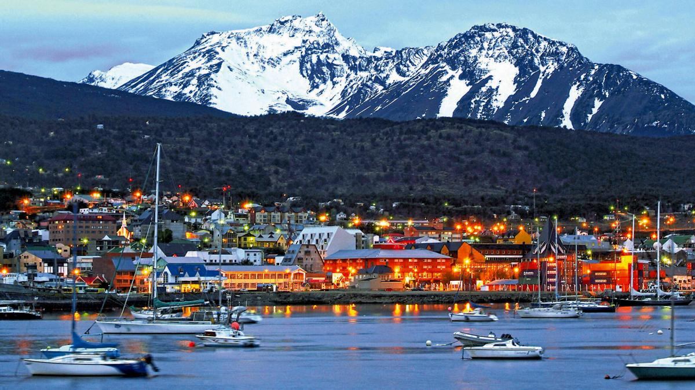
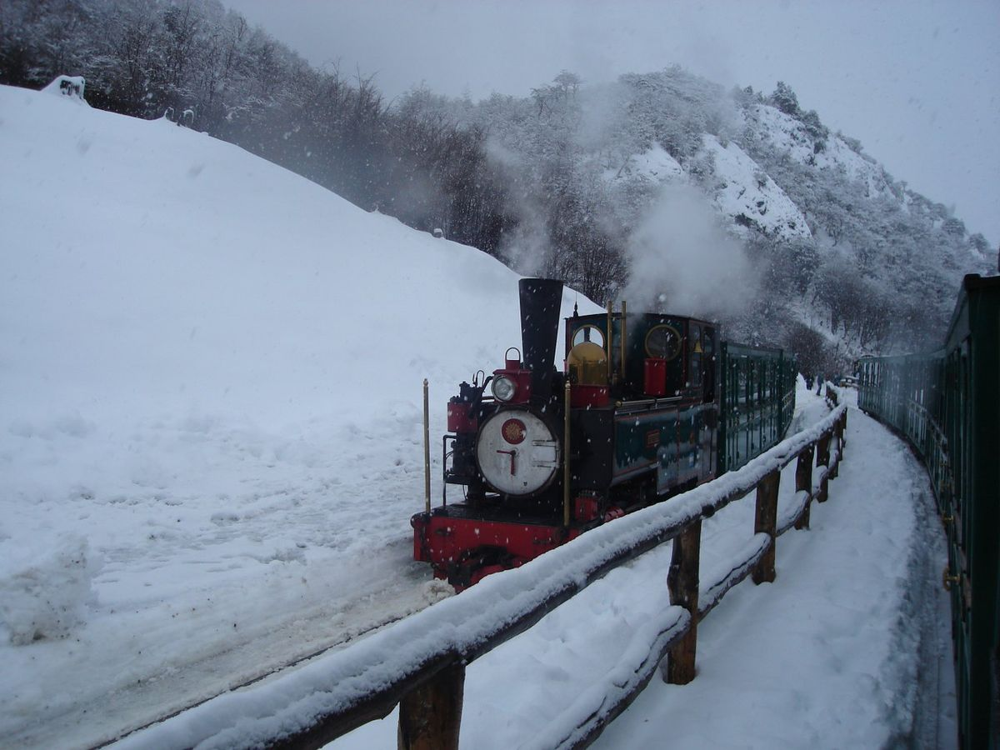
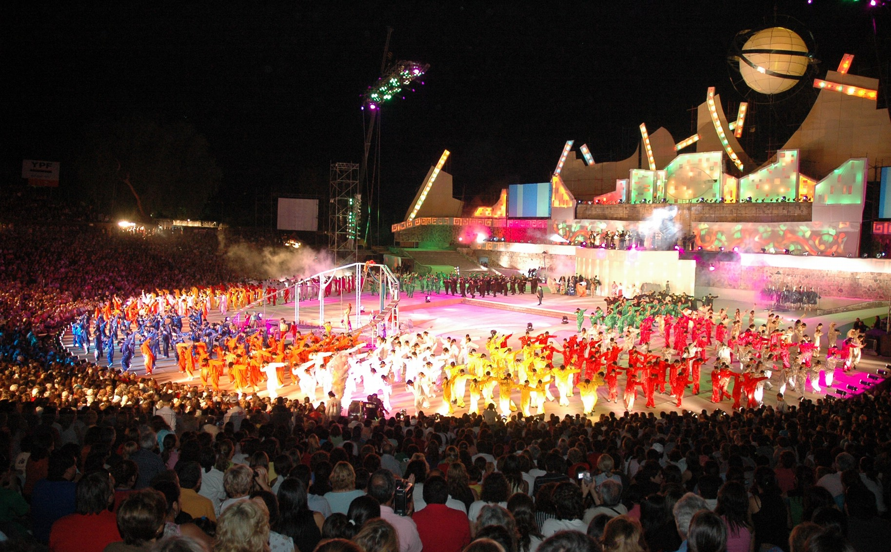

Ushuaia
La ciudad más austral del mundo, rodeada por los montes Martial y el canal Beagle. Imperdibles: el Parque Nacional Tierra del Fuego, el Museo del Fin del Mundo y el presidio histórico. Base para expediciones a la Antártida.
Experimentá la aventura en el confín del mundo con un paquete especial de 5 días y 4 noches.
Desde $1,500 USD por persona.
¡Reservar ahora!
La ciudad más austral del mundo, rodeada por los montes Martial y el canal Beagle. Imperdibles: el Parque Nacional Tierra del Fuego, el Museo del Fin del Mundo y el presidio histórico. Base para expediciones a la Antártida.

Este histórico ferrocarril de vapor recorre parte del antiguo trayecto que los presidiarios utilizaban para transportar madera. El recorrido de 7 km atraviesa paisajes espectaculares del Parque Nacional.
Tierra del Fuego fue habitada originalmente por los pueblos selk'nam (onas), yámanas y kawésqar. El nombre proviene de las fogatas que los navegantes europeos veían desde sus barcos. En 1884 se estableció la Subprefectura de Ushuaia, y el presidio (convertido luego en museo) fue fundamental para el desarrollo de la ciudad. Hoy es un destino único por su ubicación geográfica y paisajes extremos.

Celebración del solsticio de invierno cuando la noche dura más de 17 horas. Incluye conciertos, fogones, degustación de centolla fueguina y la tradicional "quema de trastos viejos" para dar la bienvenida al nuevo ciclo.
Clima frío oceánico con veranos frescos e inviernos nevados. Caracterizado por su variabilidad.
| Estación | Temperatura promedio | Clima |
|---|---|---|
| Verano | 5-15°C | Fresco con días largos (hasta 18h de luz) |
| Otoño | 0-10°C | Frío y ventoso |
| Invierno | -5 a 5°C | Muy frío con nevadas frecuentes |
| Primavera | 2-12°C | Variable con rápidos cambios |